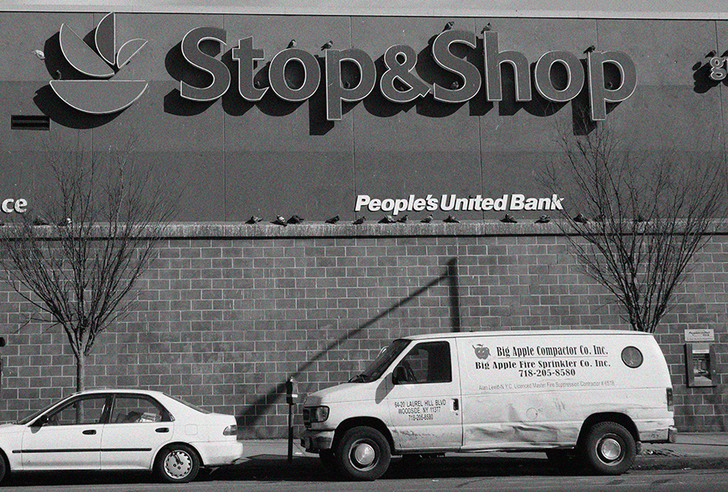
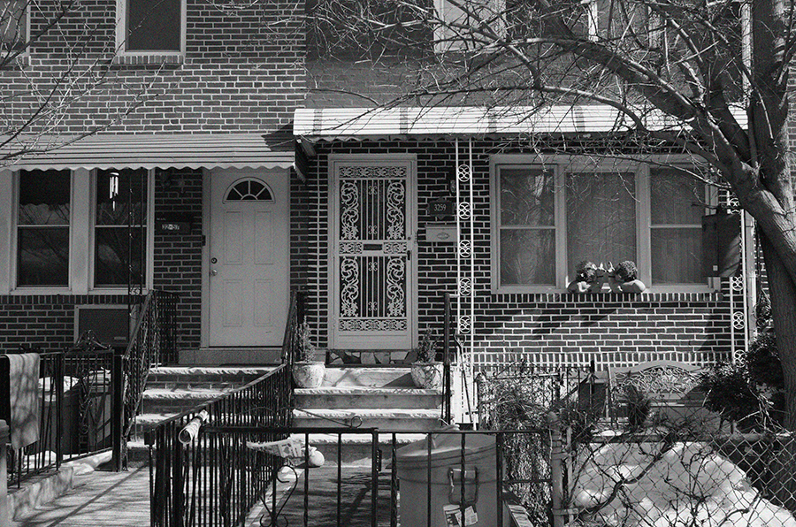
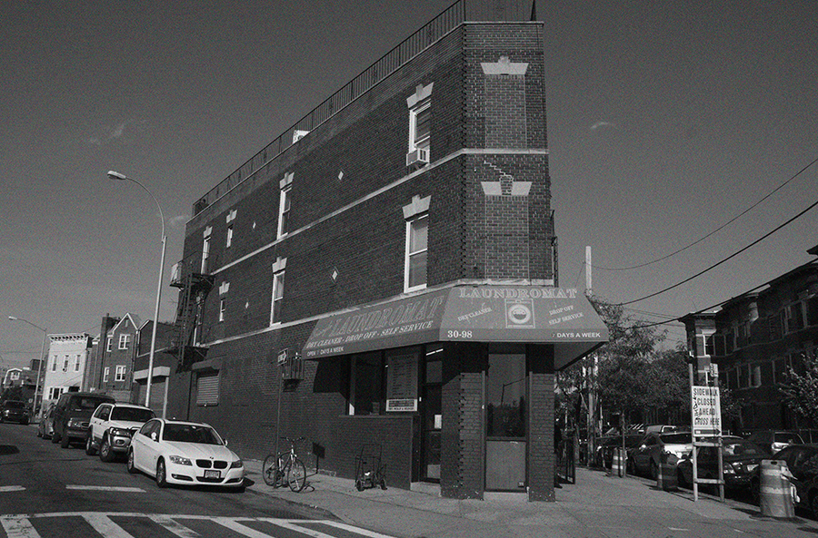
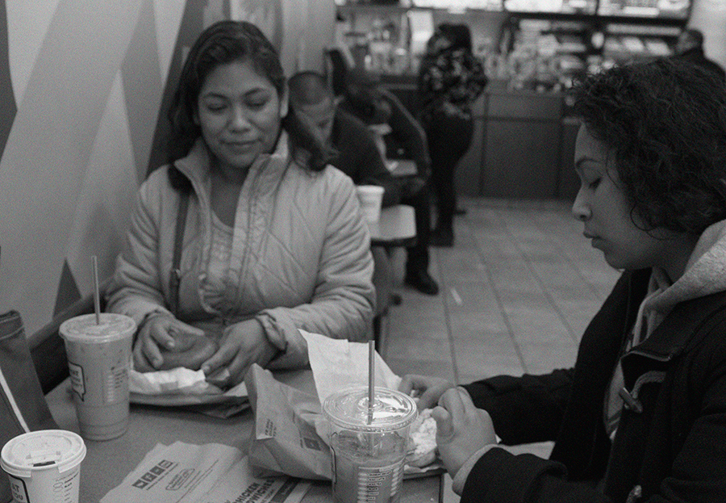
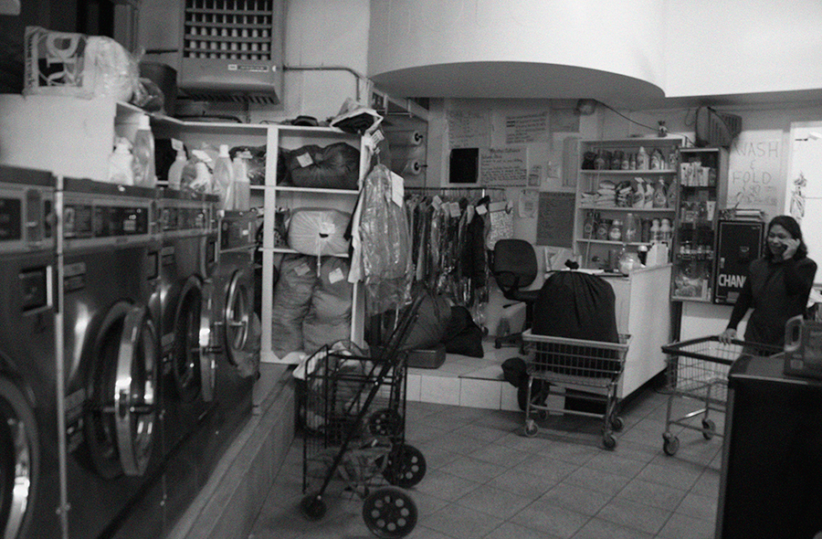
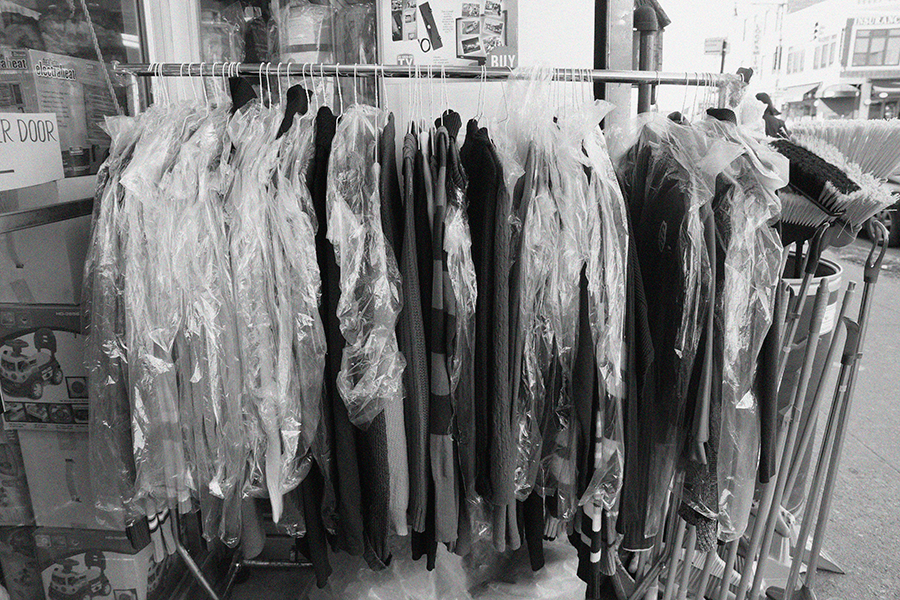
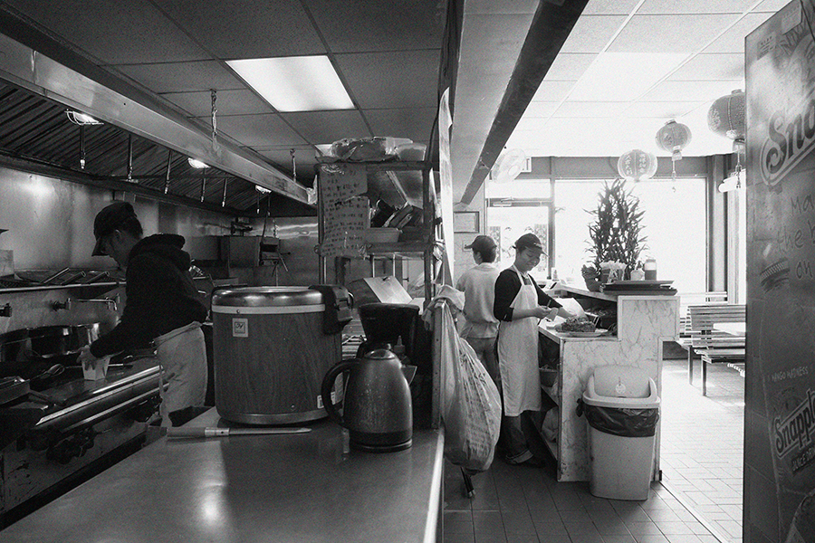
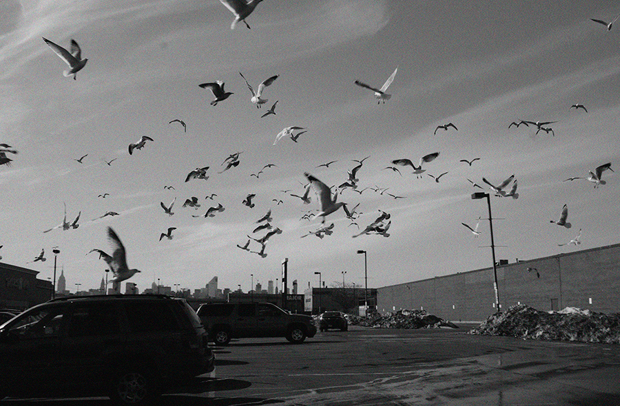

How did it begin? She was a young girl wanting to connect. It began with who she was. How would she reconcile the mixture of three ethnic identities, being all and none of them at the same time? She sought out others, in the hope that by understanding them, she would understand herself. A bit of an idealist, she believed that if people could understand each other just a little bit more, then people could treat each other better. It was not an ideal plan to save the world, just an ideal idea--that was a gesture, a point of paying attention that might alter how we view the world.
Because she was often misunderstood, she felt she had something in common with others who were also misunderstood. The 'others' in the world who didn't quite fit, who could be everything and nothing at the same time, just like her. The people around her that existed almost invisibly, who day in and day out worked the same jobs but that made life as in living possible.
She placed emphasis on her environment. The environment that shapes who you are and how you are perceived. She studied it, she made many projects on it, which some called 'very socially-conscious'. She was a 'social designer', as if that was different. In fact she was only on a search for revealing identity, working through her identity with those who were also working through theirs.
She travelled the world doing her projects and in the process tried to understand herself better. In seeing the cultures of her roots, while she was enlightened, she still did not belong completely to them. Nor did they completely accept her as one of them. After years of travelling the world, she came 'home' with the conclusion that while she could get some answers, they were not all the answers to who she was. Who she was, was its own manifestation. Her identity was a synthesis that neither she nor anyone could ever fully define. She could not break the parts, they were not distinguishable. She was just who she was. And she learned to be satisfied with that--at least to some degree.
She wasn't afraid to talk to people, though to some people they thought she was shy. She could walk up to strangers on the street and strike a conversation, and she could listen long enough to hear what they had to say. In the place where she lived, no one was actually from there. Everyone was from somewhere else, which fascinated her, because while they were from everywhere they had the identity of that somewhere from which they came. Yet they were all here, in her 'home'. This made the 'home', the place that was also like her, everything and a mystery that drove her curiosity to the point of making a new project about the identity of others which formed that place that was so undefinable, which perhaps could never be fully defined. But the search could provide at least some insight that would make the people and place worth seeking. It was a project worth doing.
In an urban environment she felt reduced to the interactions of routine--buying this and buying that. There had to be more to the meaning of her day-to-day life. Through short-lived encounters, there were hidden stories to be revealed. Could these stories be part of our everyday world in subtle bits that gave insight into the unknown identities encountered, giving meaning to the banality of routine, illuminating the banal everyday? If she could reveal her routine world through the people in it that she hardly knew, perhaps she could better define, or redefine what her 'home' is. She felt her identity on the brink of another shift, about to mold into a new definition of what would become also her, which was who she had been mixed with who she was now.
Sadar waits in his taxi to pick up his wife in front of Stop & Shop, a store in Queens, New York. They often go on these afternoon runs, tonight she's going to a their friend's home in Long Island City and must bring some gifts. Like those who welcomed them when they first came to the U.S., they are most hospitable to those who are now joining their Bangladeshi community.
It was not so long ago when they arrived, Sadar's wife won a lottery to come to the U.S. and Sadar left his job as a highly ranked lawyer to be with her. Upon arrival, Sadar took work as a pizza deliverer, until a friend in their community suggested he consider running his own taxi business. Driving a taxi has the freedom of flexible hours and provides a personal means of travel, like the trip he was on now taking his wife shopping.
Sadar sees his wife coming out of Stop & Shop. Walking by her is a woman who is holding many bags, too many to carry herself. Sadar's wife appears to recognize her and asks her if she needs help with the bags. The woman explains she has just come from the laundromat, she's dropping off clothes that were never picked up, some of these clothes will be sold to Stop & Shop, while others will end up on a rack in front of the 99cent store. Sadar and his wife help the woman drop off the bags at the front door from the parking lot. It's almost 4pm, Sadar will start work at 5pm and wants to go home to eat something before his shift. Sadar and his wife go home to cook together, cutting the squash from the seeds they brought from Bangladesh now turned into a warm soup during the winter months of New York. Over their meal, they take pride in what they have, a simple and happy life in which they hope to soon fill with children.
I walk out of my apartment after 5pm destined to find someone new to know. I hail the first cab on Broadway in Queens. Sadar pulls up and I tell him I'm doing a project where I try to talk to people I encounter but don't know and tell their stories. Sadar tells me it's okay to talk to him and motions for me to get out of the street. In the taxi, I find out all the information I have told and am about to tell. The taxi destination becomes one big drive around the block, making stops to all the places Sadar spends his own time. A mosque he prays at, the Bangladeshi grocery store where he gets free newspapers, the outside of his home, another mosque, the halal stand he gets late night food from--all within a few miles of my apartment.
I could not find someone more different from me, a Muslim man who I might meet as part of a regular routine in the city, but would never normally have insight into his life. Not as a taxi driver, but as a person, literally a neighbor who I share the same urban existence with.
Sadar explains to me that he prays at the end of his shift, 7am at the mosque on Steinway Street. After his shift, Sadar goes home, watches YouTube, gets some shuteye, wakes to take his wife on errands, cook and do it all over again. This is the routine of Sadar. Based on his routine, I ask Sadar if he can think of someone he might encounter but doesn't know. At first Sadar draws a blank, of course how could he think of someone he only subconsciously knows. How could you remember someone invisible? Then Sadar remembers there was a woman from a laundromat his wife knows, who they helped at Stop & Shop earlier in the day. I ask which laundromat, it is the Triangle Laundromat where I drop off my laundry. As I exit the taxi, I pay Sadar a fare for driving in circles and thank him for the lead.
The laundry spins all around Bertha as she attempts to scrape chewing gum off a client's shirt. Sometimes this job is gross, but at least she has flexible hours to spend with her children, her eldest being a daughter she's helping to put through pharmacy school.
Bertha first came to New York to be with her husband, also from Mexico, who sells hot dogs from a pushcart by the Statue of Liberty. Upon arrival, Bertha found a job working for a Greek businessman opening a laundromat, the Triangle Laundromat, named so because of the shape of its floor plan, at an intersection near 31st Avenue. The laundromat changed hands and fifteen years later, Bertha and her sister took over the laundromat as their own business.
Like Sadar, Bertha has her own grocery store to buy ingredients from her country. The Mexican grocery store on Broadway is where she frequents, though she cooks authentic Mexican food primarily for her and her husband. Bertha's children have grown up more American and choose burgers over her tamales. I for one would be delighted have her cooking over burgers any day. Bertha invites me to have breakfast with her and her daughter. We exchange phone numbers and make plans to meet the next week on Steinway Street.
On Steinway Street, Bertha's daughter has chosen for us to have breakfast at a doughnut shop. I get a coffee and the three of us discuss living in Queens. The daughter and I talk about school, Bertha tells me about her home in Mexico. Bertha's hometown is a small rural town where she lived minimally. Bertha's mother died at a young age and she grew up taking care of her siblings. When her husband came to New York, he was able to bring the family over one member at a time, living at first in a one room apartment with eight to ten people. Eventually with some income, pure hard work and saving, Bertha and her husband were able to rent their own apartment, having enough space to build their own home.
Bertha says that now when she visits Mexico, she actually sees her country. When she lived in Mexico, she rarely left her town due to her hardships. But now, with her own business at the laundromat Bertha can take her family on vacation to see places like Oaxaca and Cancun. Bertha now realizes how beautiful her country is and has a higher appreciation for her cultural roots.
One day, Bertha puts clothes into a dryer when cash falls out of a pair of pants. Bertha picks up the wad of cash, exactly $348. Thinking the client will come within a day to pick up his laundry, Bertha keeps the cash in a drawer by the register. Except the client didn't come. Bertha looked for his phone number on the laundry ticket, but he had only given his name. A month passed and the client finally came to pick up his laundry. Oblivious to his loss, Bertha pulls out the $348 and tells him she found it in his pair of pants. Bertha is perplexed as to why he would not even notice what he had lost, perhaps he did but as time passed he must have forgotten.
This client was not the only one who was late to pick up his laundry. I confess I only drop off my laundry about once per month. Bertha says she already knows this about me. A moment of a routine errand for me is a regular insight to her about my persona, right down to my underwear. In this sense, I perceive my investigation as a one-way path, a necessity to unveil a stranger who has already formed her own observations about me.
In the corner of the laundromat a pile of lost laundry bags sit. Eventually the unclaimed clothes pile up to the point where the laundromat can no longer keep them. After about six months, Bertha collects the bags and drops them off at Stop & Shop and the 99cent store, where she gets a small payment for the clothes. The 99cent store is not far from my apartment, I pass it daily walking home from the subway. I still buy planners each year from the 99cent store, along with cleaning supplies and random finds for projects. I ask Bertha if she knows the person who works at the 99cent store, she is acquainted with him but only knows him in the context of a business transaction. As I walk Bertha to the laundromat from Steinway Street, I mull over another encounter in both of our routines to seek out. I wave bye to Bertha until I come in with my laundry, she tells me to keep her updated with my project, I plan to invite her to an exhibition.
The unclaimed clothes from the laundromat fill a rack on the sidewalk looking for new owners in the passersby who rarely stop to notice. Most of the clothes look plain, since it is raining I see each has been carefully covered with a plastic bag to prevent further damaging their plainness.
From the rack outside the 99cent store I enter to find an overwhelming amount of stuff packed tightly in the small store. Compartments of trinkets, notebooks and supplies cover the walls on all sides while umbrellas and balloons hang down from the ceiling. Only a small space to pass in front of the cash register remains clear. There in a camouflage sweatshirt, as though he is hidden among the jungle of junk, sits Gong.
Gong sits quietly behind the register, waiting for a customer to approach him. Every time I have been in the store he gives me a nod of acknowledgement. This time I'm in the store to find out more about who he is. I explain the lead from Bertha and he nods like he knows who I'm talking about. But then Gong surprises me by telling me that while he also recognizes me, his wife told him I'm a regular customer at the Chinese takeout across the street. I had no idea there was a connection between the 99cent store and the Chinese takeout across the street, beyond perhaps a community of Chinese in this part of Queens.
It hits me that the people in my neighborhood have been gossiping, I've been found out and I don't even need to justify my seemingly random actions any longer. I'm further convinced that everyone must already be in on it because a week before I considered talking more in depth with my postman, who informed me that he heard there was a girl living around here who was doing a similar project. Sudden pause--I watch my postman's expression change into the realization that the source of the gossip was me standing right in front of him. I decided at that moment not to inquire any further with the postman, it felt like I had made a joke that was actually on me all along. Nevertheless, my postman informed me that if I wanted to interview him, he passes around 12:30 every Tuesday and Thursday. I thanked him and then scuddled back into my apartment.
Gong's wife Lin walks into the 99cent store, we recognize each other and are very friendly in greeting one another. Gong tells me she runs the Chinese takeout while he runs the 99cent store. Gong's family members were already in Queens and he came when he was eighteen from southern China. In Queens, he met Lin, a very pleasantly talkative Chinese woman who was also joining her family in Queens. Their marriage seemed in part arranged, Lin explains that their mutual friend told them to get together, so they just did. The two have a very straightforward lifestyle, everything is about work. Gong and Lin explain that their work is driven by the goal to begin their own family. Lin dominates the conversation, while Gong sits quietly nodding in agreement with her. For the most part the two stay in the neighborhood, though they occasionally go to Flushing to visit friends. On their off time, they go for walks in Astoria Park nearby. A wide open green under two bridges is the only place that our routines cross.
I finish documenting the 99cent store when Lin invites me over to the Chinese takeout to document her cooking noodles in a giant wok. I photograph Lin, receive about ten fortune cookies from her, and then go on my way, of course knowing I will be back in again as one of her regular customers. The meaning of our encounter will continue each time I step in to order takeout. I head towards the park to take a walk.
The mail arrives at 12:30 on Tuesday. There's a letter from my landlord addressed to my sister to renew the lease on our apartment. After two years of living together, my name has not been added to the lease, causing an inconvenience in planning to take over the apartment within the coming year. My sister and I decide to hold a meeting with the landlord, in which she endearingly pulls out a message she has saved from two years ago, the landlord praising my credit score as the best he has ever seen. Nevermind that I also work hard and save, my landlord looks at me with only one line: "As I recall, you don't have a full-time job." I inform him that I work part-time because I am finishing graduate school. "What school do you go to again?" he asks. I say "Parsons". His only response, "Oh...ART". I've been branded as a poor struggling artist.
In that moment, I decide with or without the lease, the time has forced me to move on. What I was defining as my 'home' has once again been overturned to be redefined. I have one month to relocate my place of residence, unsure of where I will end up next.
The encounters with Sadar, Bertha, Gong and Lin will unexpectedly cease, any meaningful connection that has been established will be cut. Our relationships and identity are defined only in those brief moments of knowing one another. It was what it was, and I could only make the most out of where I was. Living without taking things for granted, to appreciate as much as possible, while I cannot say I deeply know the characters of this true story, I can say with definite affirmation that it was worth understanding them as much as I could. It was worth it because it made me human, it made us human. The urban drudgery, the banality of everyday transactions was intercepted with the question of what if we knew just a little bit more. If the story of a person is made visible in even the lightest way, they could be better understood, a small but genuine connection could be made in a physical environment. By approaching my neighbors I also became in a way a connection, if at the very least a point of neighborhood gossip. That to me was something, it catalyzed curiosity, an interest in discovering more about what surrounds me. If I created the same interest in my neighbors, then I considered this project accomplished.
On a last round I go to where this story began, Stop & Shop. In the parking lot facing the skyline of Manhattan, I witness a flock of seagulls sunbathing on the concrete. Walking towards them the birds begin to fly away until they are all in the air around me. I photograph them, migrating to their next destination. In the same way, I continue my migration to a new destination, the same city but a different neighborhood, with new routines to establish and new people to encounter. I look forward to making the most of it.
Acknowledgements